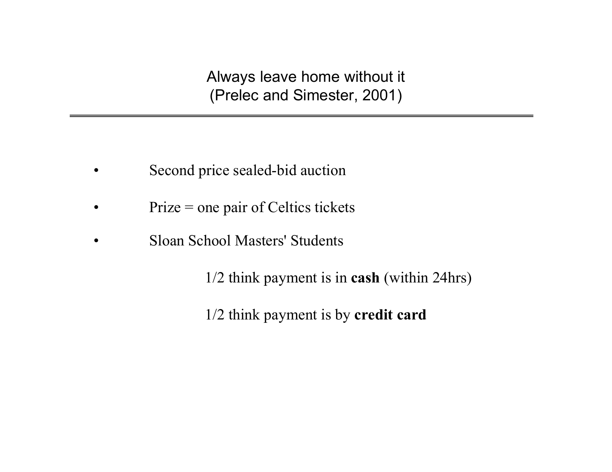
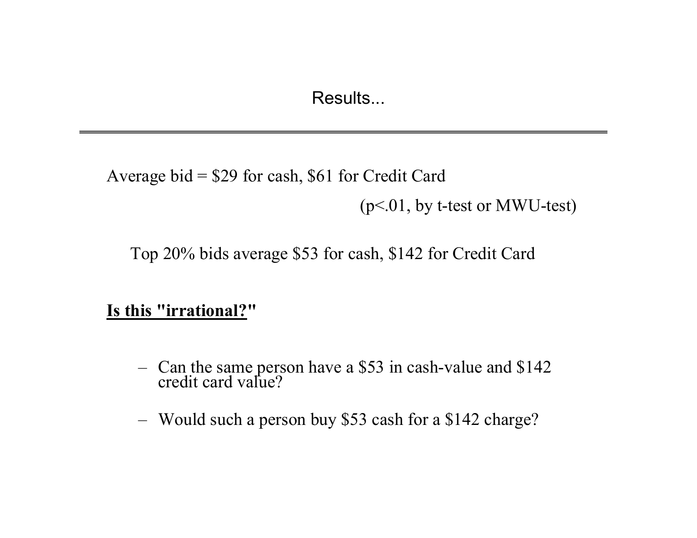
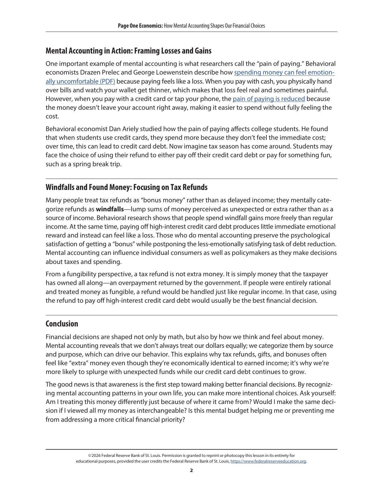
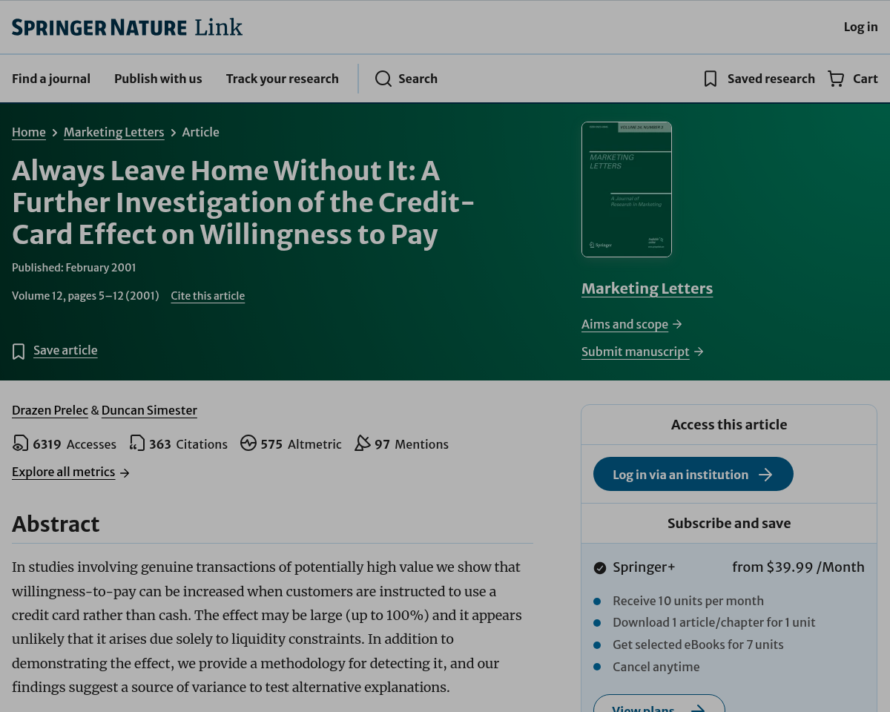

Why Paying by Card Doubles What You Spend (MIT Study)
In 2001, MIT professors Drazen Prelec and Duncan Simester auctioned real sold-out Boston Celtics tickets to MBA students. Students paying by credit card bid $60.64 on average, while cash bidders stopped at $28.51. Source: Marketing Letters, Vol. 12, No. 1 (2001).
The MIT Sold-Out NBA Ticket Experiment
In 2001, two MIT professors auctioned sold-out Boston Celtics tickets to MBA students, and one rule made half the room bid twice as much.

- Real sealed-bid auction for sold-out Celtics tickets
- Only one rule changed between the two student groups
Source: Drazen Prelec & Duncan Simester, Marketing Letters (2001)
Cash Within 24 Hours vs Credit Card
Students paying cash within twenty-four hours bid an average of twenty-eight dollars and fifty-one cents. Students paying by credit card bid sixty dollars and sixty-four cents.

- Cash bidders averaged $28.51 paid within 24 hours
- Credit card bidders averaged $60.64 for identical seats
Source: Prelec & Simester, MIT Sloan Auction Data (2001)
Why Tap-to-Pay Numbs the Pain Center
Economists call this the pain of paying. Cash makes your brain feel the loss right now. A card delivers the reward today and hides the bill next month.

- Handing over bills triggers immediate loss awareness
- Tapping a phone delays the mental cost by 30 days
Source: Prelec & Loewenstein, Marketing Science (1998); St. Louis Fed
Convert Price Tags Into Net Work Hours
Before tapping for any non-essential item, divide its price by your net hourly pay. At twenty-two fifty an hour, a ninety-dollar impulse buy costs four desk hours.
Source: Mind & Margin Real-Wage Filter (rule of thumb, not a study)
Put Friction Back Before You Tap
Wait twenty-four hours on anything above two work hours, and you stop overpaying like the credit card half of that MIT room.

- Wait 24 hours whenever an item costs over 2 work hours
- Keep the cash gap working in your own account
Source: Prelec & Simester (2001); Mind & Margin Spending Filter
- Prelec & Simester, 'Always Leave Home Without It,' Marketing Letters 12(1), 5-12 (2001): https://link.springer.com/article/10.1023/A:1008196717017
- MIT OpenCourseWare 15.821: Drazen Prelec Celtics Sealed-Bid Auction Slides: https://ocw.mit.edu/courses/15-821-listening-to-the-customer-fall-2002/5cc52570803b6e1bbea64585acdce779_redblack20copy.pdf
- Federal Reserve Bank of St. Louis: Page One Economics on Mental Accounting & Pain of Paying: https://fraser.stlouisfed.org/files/docs/publications/pageone/frbsl-pageone-202604-how-mental-accounting-shapes.pdf
Free 5-Hour Asset Builder OS and Anti-Leak Checklist. Check current edition availability directly on Amazon or explore Audible audiobook options.
Check Availability on Amazon Listen Free on AudibleTopics: psychology of money, pain of paying, mit credit card study, spending habits, behavioral economics, personal finance